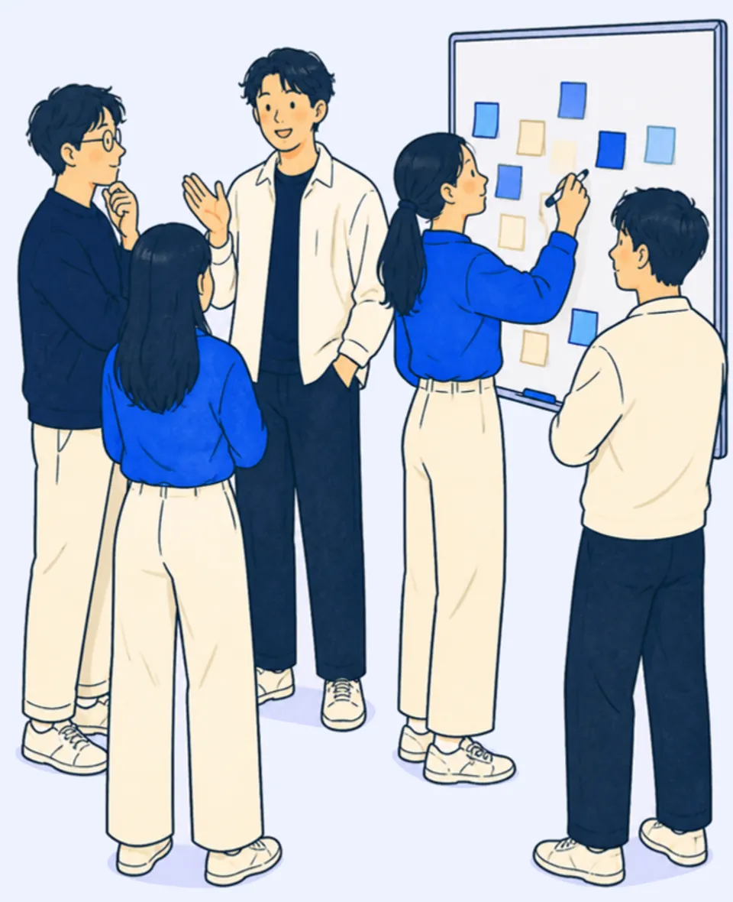
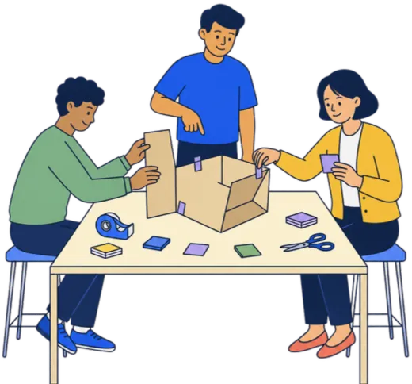
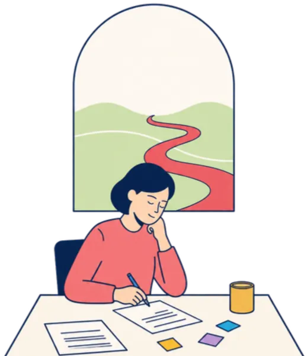

設計思考・創意思考・未來思考
幫團隊找工作坊，還是想自己學？
我們到企業、學校、公部門帶工作坊，15 年超過三百場；也把同一套方法做成給個人的線上課程。選一扇門，直接看你要的資訊。

帶團隊企業・學校・公部門・醫院・基金會
幫團隊辦一場工作坊
新產品沒新意、不懂顧客要什麼、開會想不出點子？我們到你們單位帶設計思考、創意思考、未來思考的工作坊、共識營、創意團建、創新黑客松，半天到兩天，用你們的真題目，做出能拿去試的方案。到你們單位帶工作坊、共識營、創意團建、創新黑客松，半天到兩天，用真題目做出能試的方案。

你是哪一種單位？直接看對應的介紹
給自己線上課程
自己學，想清楚下一步
工作或人生方向卡住，想換跑道又怕選錯？線上課程《別急著找答案！善用設計思考，打造你自己的人生藍圖》帶你一步步畫出自己的人生藍圖，在 PressPlay 照自己的節奏上。工作或人生方向卡住？線上課程《別急著找答案！善用設計思考，打造你自己的人生藍圖》，在 PressPlay 照自己的節奏上。

15 年・超過三百場工作坊
合作過超過 100 個企業、政府與學校單位